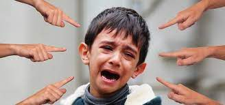
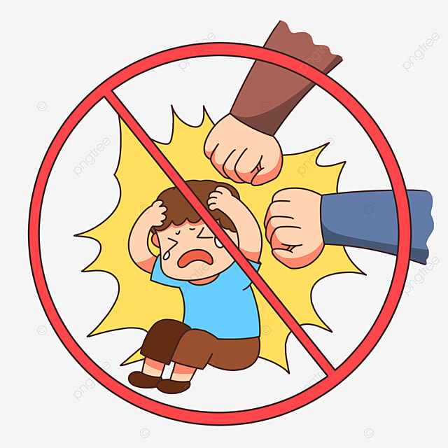

| La violencia escolar es un fenómeno preocupante que puede manifestarse de diversas formas, como el acoso verbal, físico o psicológico entre compañeros, así como la discriminación o exclusión social. Estas conductas pueden tener consecuencias graves para las víctimas, incluyendo problemas de salud mental, bajo rendimiento académico, y en casos extremos, incluso llevar al suicidio. Es importante que las instituciones educativas implementen medidas para prevenir y abordar la violencia escolar, fomentando un ambiente seguro y respetuoso donde todos los estudiantes puedan desarrollarse de manera integral. Además, es fundamental involucrar a toda la comunidad educativa, incluyendo docentes, padres y personal administrativo, en la promoción de valores de tolerancia, empatía y resolución pacífica de conflictos para erradicar este problema. |  |
La violencia escolar, el acoso y el ciberacoso son una práctica cada vez más recurrente que afecta la vida de las y los alumnos de todos los niveles educativos con especial énfasis en los niveles primario.
En el marco del Día Internacional contra la Violencia y el Acoso en la Escuela, incluido el Ciberacoso, la Secretaría de Educación Pública (SEP), junto con la Unesco y representantes de los países de Francia y Marruecos, firmaron la Declaratoria para la Prevención de la Violencia y el Acoso en la Escuela, en el estado de Campeche y acompañado por la gobernadora, Layda Sansores San Román; el secretario de Educación del Estado de Campeche, Raúl Aarón Pozos Lanz, la presidenta del Instituto Nacional de las Mujeres (Inmujeres), Nadine Gasman Zylbermann; así como la directora general de la UNESCO, Audrey Azoulay, y otros con países invitados.
Este Día Internacional para combatir la violencia escolar en todos sus niveles fue instaurado por primera vez en el marco de la 40° Conferencia General de la UNESCO en noviembre de 2019 a propuesta de México, Francia y Marruecos, con el objetivo de generar mejores prácticas en materia de prevención del acoso, la violencia y ciberacoso escolar.
De acuerdo con la UNESCO, la prevalencia del ciberacoso en los países de altos ingresos muestra que la proporción de niñas, niños y adolescentes afectados por esta problemática asciende hasta un 21%, siendo las niñas y adolescentes las que tienen más probabilidades de sufrir ciberacoso, respecto con los niños.
El acoso escolar, también conocido como bullying, se define como un comportamiento agresivo e intencional que se repite con frecuencia y que tiene lugar en el ámbito escolar, ya sea físico, verbal, psicológico o social. Este comportamiento suele ser ejercido por uno o más estudiantes contra otro, con el objetivo de intimidar, humillar o causar daño emocional o físico a la víctima. El acoso escolar puede manifestarse de diversas formas, como insultos, burlas, exclusión social, agresiones físicas o ciberacoso a través de medios electrónicos. Es importante destacar que el acoso escolar implica un desequilibrio de poder, donde el agresor o los agresores tienen mayor poder o estatus social que la víctima, lo que dificulta que esta última pueda defenderse o escapar de la situación.